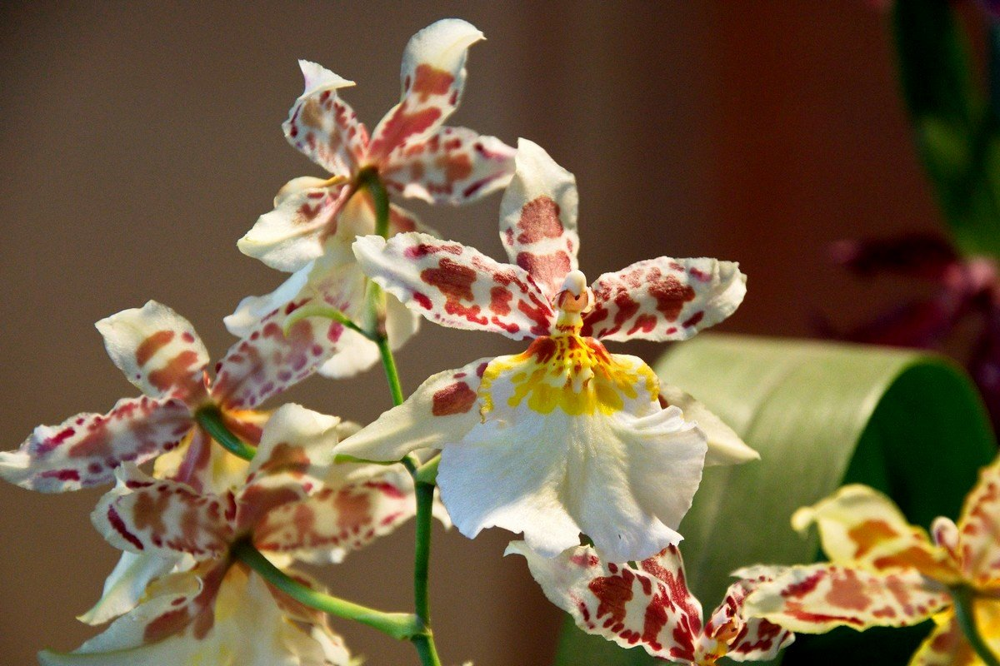
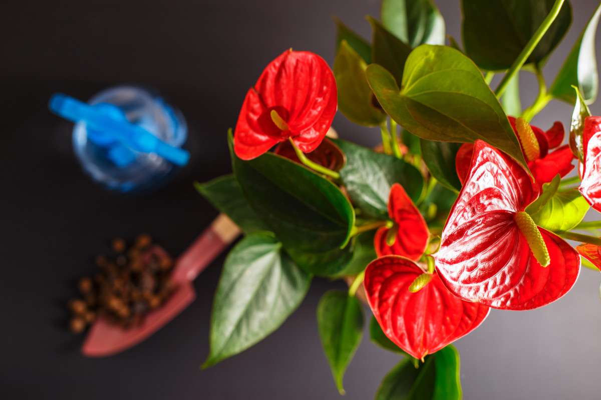

Цветущие
.jpg)
Ардизия
Ардизия нуждается в большом количестве яркого света, однако не рекомендуется, чтобы на куст попадали прямые лучи солнца. Если растение стоит на подоконнике южного окна, то в летнее время его надо притенять. В связи с этим для ардизии следует выбрать окно, расположенное в восточной либо западной части комнаты. Данное домашнее растение хорошо растет при обычной комнатной температуре. В летнее время температура должна быть в пределах 18–26 градусов. В зимнее время его рекомендуется переставить в прохладное место (от 14 до 16 градусов). Это связано с тем, что зимой наблюдается закладка бутонов, которая происходит при температуре от 14 до 18 градусов. Если в зимнее время куст будет находиться в тепле, то цветение будет скудным. В жарком помещении ягоды очень быстро высыхают и осыпаются. Еще такой цветок нужно беречь от холодных сквозняков Этот цветок нуждается в повышенной влажности воздуха. Увлажнять растение можно из опрыскивателя, используя воду комнатной температуры. Однако опрыскивать куст в период цветения и завязывания ягод крайне не рекомендуется. При чрезмерно низкой влажности воздуха формируется меньшее количество ягод либо они осыпаются. Летом в жаркие дни поливать цветок следует обильно сразу после того, как подсохнет верхний слой субстрата. Во время прохладного содержания полив следует сократить до умеренного. Если в субстрате будет застаиваться жидкость, то это приведет к отмиранию листвы и гибели куста. Если листва на растении стает мягкой и обвисает, то это значит, что его нужно срочно полить. Во время интенсивного роста подкармливать ардизию необходимо 2 раза в месяц, для этого используя комплексное минеральное удобрение. В зимнее время все подкормки прекращают.

Камбрия
Нуждается в ярком освещении, но при этом растение нужно притенять от прямых лучей солнца. Лучше всего оно будет себя чувствовать на окнах восточной и западной ориентации. Если камбрию разместить на южном окне, то тогда ее следует слегка притенять от палящих полуденных солнечных лучей. Зимой растение надо будет подсвечивать специальными фитолампами. При этом следует учесть, что световой день в данный период должен иметь продолжительность не меньше 10 часов. Растению круглый год требуется равномерно-умеренный температурный режим от 18 до 25 градусов. У камбрии есть одна значимая особенность, так, ей не нужны перепады суточных температур для того, чтобы произошло формирование цветочных бутонов. Для выращивания данного рода орхидеи в горшке понадобится особая землесмесь. Ее самыми главными составляющими являются: измельченный сфагнум и мелкофракционная кора сосны. Для того чтобы не допустить закисления, которое происходит из-за разложения коры, в землесмесь надо всыпать не очень большие куски древесного угля. А чтобы аэрация была лучше можно использовать меленький керамзит, торфяные чипсы либо пемзу. Бывает, что для лучшей пропускаемости воздуха в субстрат добавляются небольшие куски пенопласта, однако это не очень удобно, так как при поливе погружением этот легкий материал не тонет и плавает по поверхности воды. Сажая такое растение, нужно очень аккуратно обращаться с его нежными корешками. В самом начале в пустую емкость следует опустить всю корневую систему и только после этого аккуратно всыпать готовую землесмесь. Когда орхидея будет посажена, на поверхность субстрата нужно выложить мох сфагнум не очень толстым слоем. Он будет препятствовать быстрому испарению влаги. Также существует еще одна очень важная тонкость. Перед тем как засыпать кору в горшок, ее необходимо несколько раз прокипятить (2 либо 3). Тем самым удалятся излишки смолы, а также кусочки хорошенько напитаются влагой. Поливать такой цветок рекомендуется способом погружения. В тазик набирается вода и в нее опускается емкость (она должна погрузиться полностью) с орхидеей. После того как пройдет от 20 до 30 минут горшок следует достать. За это время пористый веламен, покрывающий поверхность корешков, напитается влагой. На место цветок ставят только после того, как стечет вся лишняя жидкость. Среди цветоводов бытует мнение, что орхидея очень любит влагу, но при всем при этом заливать ее не следует. Дело в том, что очень часто из-за избытка влаги начинают гнить корни, а это нередко влечет за собой гибель самого растения. Чтобы этого не допустить, поливать камбрию нужно только после того, как полностью просохнет кора. Для полива следует использовать исключительно мягкую воду комнатной температуры, которая обязательно должна быть хорошо отстояна. В том случае, если вода из водопровода имеет плохое качество, то перед тем как применять ее для полива, требуется обязательное фильтрование. Данного рода орхидее не нужна повышенная влажность воздуха. Для того чтобы в комнатных условиях она чувствовала себя хорошо, требуется всего 35 процентов влажности. Поддерживать такой уровень влажности очень просто. Так, верхний слой, состоящий из мха, надо систематически увлажнять из опрыскивателя, а также рекомендуется, в непосредственной близости от цветка разместить открытую емкость с жидкостью. Подкормку проводят только в период роста и созревания псевдобульб 1 раз в 2 недели. Для этого используют специальное удобрение для орхидей.

Антуриум
Антуриуму необходим яркий, но рассеянный солнечный свет. Поэтому лучше всего он растет на западных и восточных окнах. На северном подоконнике растение будет испытывать недостаток освещения, а на южном его нужно притенять от прямых солнечных лучей. Оптимальная температура в период вегетации — 22–28°С, в зимнее время — около 16 градусов. Исключение — антуриум Шерцера, предпочитающий прохладную (12–14°С) зимовку. Важно учесть, что цветок плохо переносит сквозняки и резкие температурные перепады. Поливают «мужское счастье» обильно, но только после того, как земляной ком просохнет наполовину. Зимой полив должен быть умеренным. Нельзя допускать застоя воды, что может привести к загниванию корневой системы. Поэтому после полива лишнюю жидкость с поддона выливают. Для полива нужно использовать мягкую воду — дождевую, талую либо отстоявшуюся. Цветок требует повышенной (около 90%) влажности, иначе его рост затормаживается. Поэтому листовые пластины следует регулярно опрыскивать либо протирать влажной губкой. Можно насыпать в поддон гальку или керамзит и налить воды. Воздушные корешки желательно обложить влажным мхом. При опрыскивании нужно следить, чтобы капли воды не попадали на цветы. Иначе появятся пятна, что негативно скажется на декоративности. Земляная смесь должна быть рыхлой и хорошо пропускать воздух. Можно приобрести готовый субстрат (грунт для ароидных или орхидей) в магазине либо приготовить его самостоятельно, смешав: -дерновую землю, торф и рубленый сфагнум в соотношении 1:2:2; -лиственный перегной, торф и песок в равных пропорциях; -грубый торф, керамзит, сосновую кору в одинаковых соотношениях; -кору сосны, пемзу, грубый торф, полуперепревший конский навоз в пропорции 2:2:1:1. Желательно добавить в почвосмесь измельченный древесный уголь. Антуриумы отлично себя чувствуют и в одной коре, но в таком случае особое внимание следует уделить подкормке. Горшок для пересадки берут диаметром на 10–20 миллиметров больше предыдущего. Лучше всего использовать пластиковую емкость, так как в керамической посуде температура воздуха и субстрата одинакова. Горшок нужно подбирать не сильно широкий, но глубокий С февраля по декабрь растения раз в 2–3 недели подкармливают минеральными удобрениями. Дозировку нужно уменьшить вполовину по сравнению с рекомендованной производителем. Хорошо реагирует антуриум и на внекорневые подкормки, которые вносят раз в 10–15 дней. Помимо минеральных удобрений, можно использовать и органику (коровий, конский или листовой перегной, перебродивший коровяк, настой куриного помета), но в небольших концентрациях.